Hey there, I'm Szymonpronounced SHIH-mawn. Welcome to my corner of the internet. I like building products, data, and telling stories that stick.
I also enjoy writing, I read Wikipedia for fun, and I cycle to the Golden Gate Bridge every morning, because what could be a cooler thing than that?
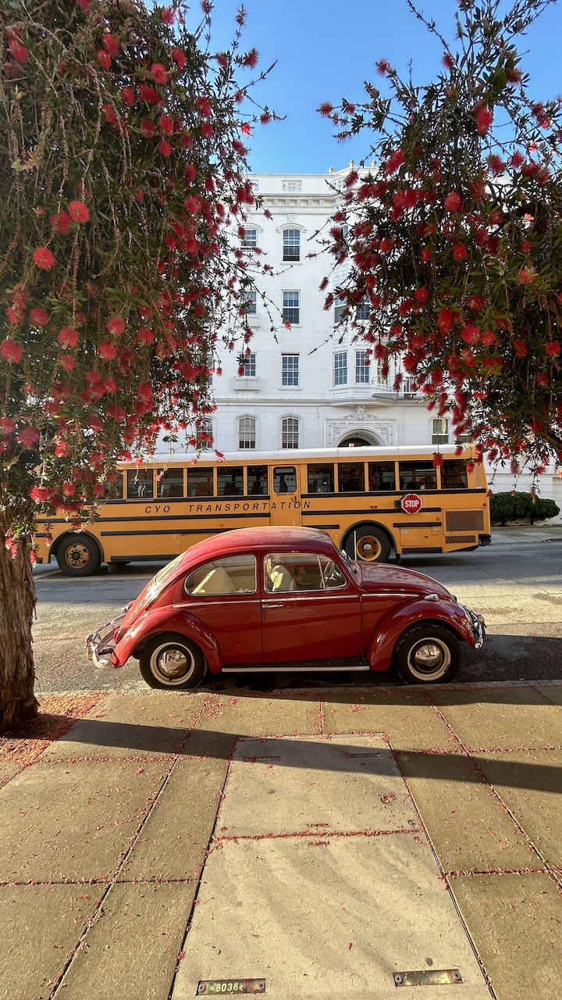
A San Franciscan morningYou Can See the Partitions
A cover story for ZNAK magazine about maps and cartography, touching on how maps can visualise — and manipulate — data.
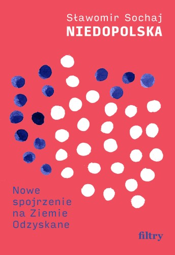
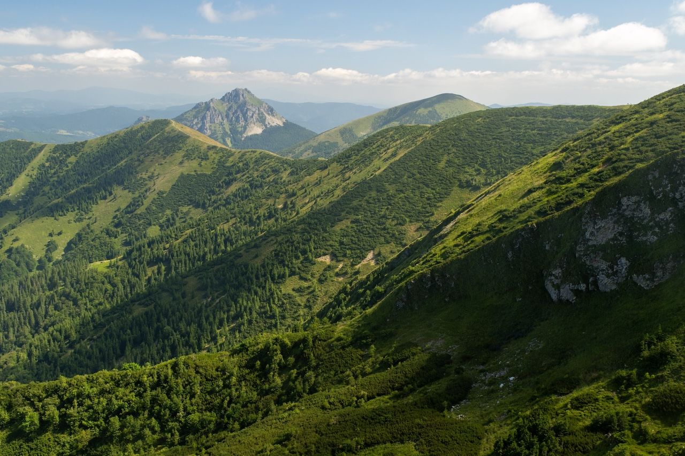
Slavic DolomitesPoles Live in Shoeboxes
An opinion piece, backed by data, on the cramped living conditions of Poles in big cities and how they are stopping young people from family formation.
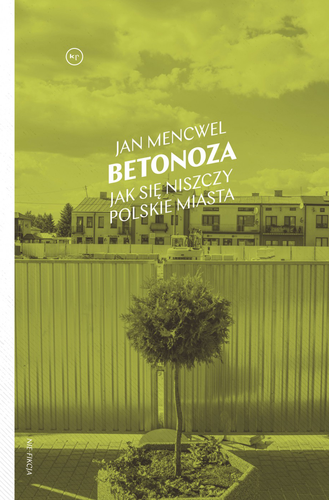
Identity Politics or Class Interest?
An in-depth analysis of the 2025 presidential election in Poland, arguing that religion, not social class, delivered a victory for Karol Nawrocki.
writing
I run Kartografia Ekstremalna, a data blog about Poland with 130,000+ followers. Selected articles below — all originally in Polish. Click through to read on the original site.
Who Will Dare Abolish Small Municipalities?
A research paper on the growing fiscal crunch small municipalities find themselves into, and a call for amalgamation of municipal borders to sustain basic public services.
Poles Live in Shoeboxes
An opinion piece, backed by data, on the cramped living conditions of Poles in big cities and how they are stopping young people from family formation.
Polish Sprawl Blocks Green Energy
A widely-cited educational article on the cost of urban sprawl and laissez-faire urban planning, through the lens of inability to find suitable greenfields for wind power.
Identity Politics or Class Interest?
An in-depth analysis of the 2025 presidential election in Poland, arguing that religion, not social class, delivered a victory for Karol Nawrocki.
How Many Poles Are There in the World?
A critique of the belief that Poland does not need immigration because there are millions of Poles abroad, outlining the true numbers and assessing their appetite for return.
A Lifecycle of Moves of an Average Pole
An analysis of how Polish people's moving patterns change across their lifecycle.
What Are Poland's Agglomerations?
A research article attempting to delimitate borders of Polish metropolitan areas, based on commuting, migration and economic data.
The Triumph of the Polarization-Diffusion Model
A widely-cited analysis of the growing divergence between Poland's big 5 cities and the rest of the country in living standards, urban fabric, and opportunities.
The Demographic Twilight of Upper Silesia
A data-driven opinion piece on the demographic decline of my home region, brought by deindustrialisation and declining birth rates.
You Can See the Partitions
A cover story for ZNAK magazine about maps and cartography, touching on how maps can visualise — and manipulate — data. (paywall)
readings
What I'm reading, what I've read, and what I hope to read next. Mostly about Poland, urbanism, and the forces that shape how we live. Recommendations welcome!
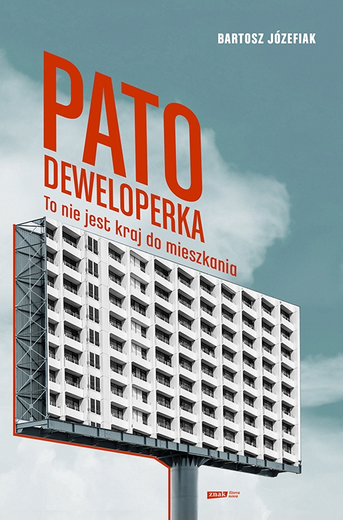
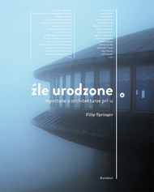
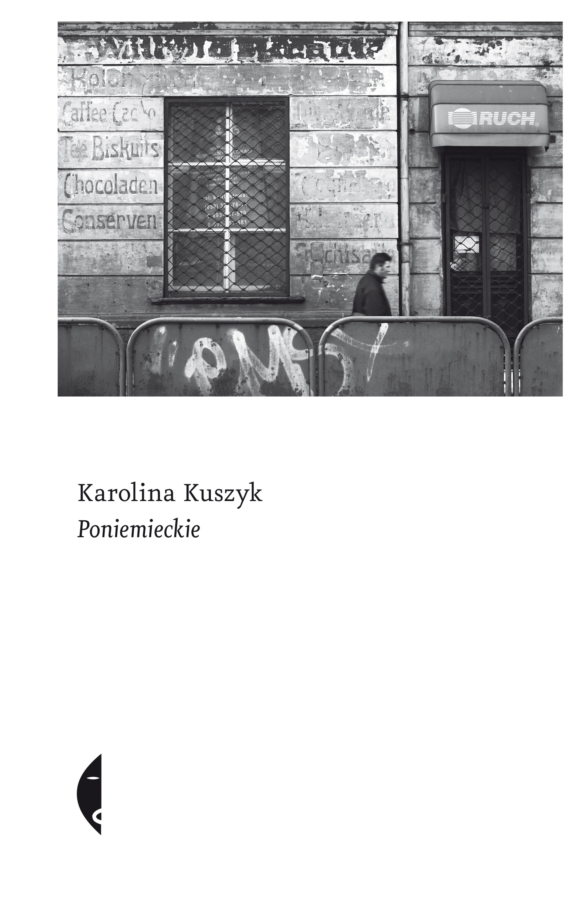
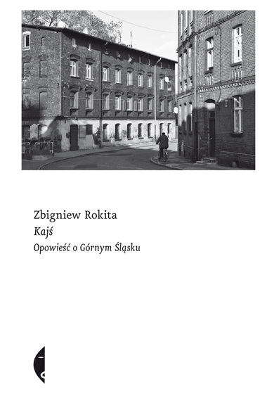
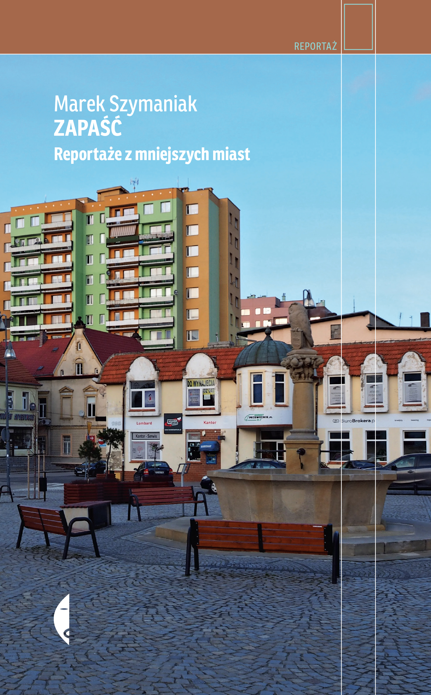
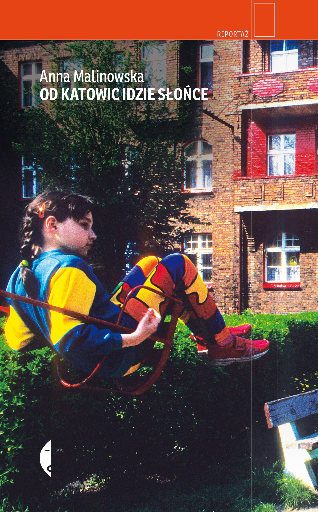

hobbies
I cycle, hike, and take photos. I've been exploring the American West since moving to San Francisco, but the best light is still in Poland.
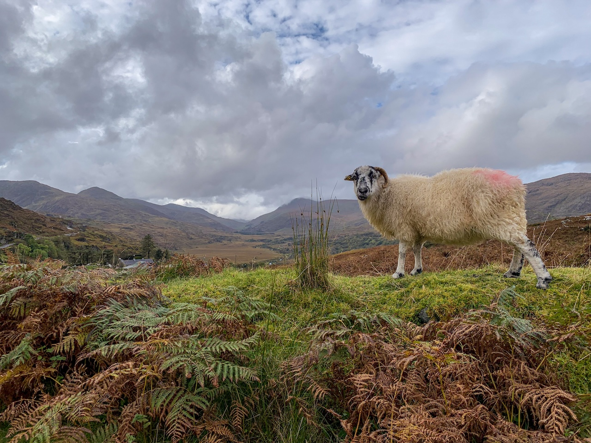
A goat with a view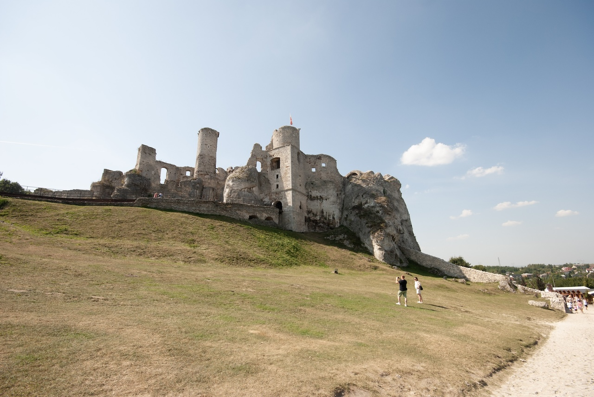
Game of Thrones vibes 30 mins from my hometown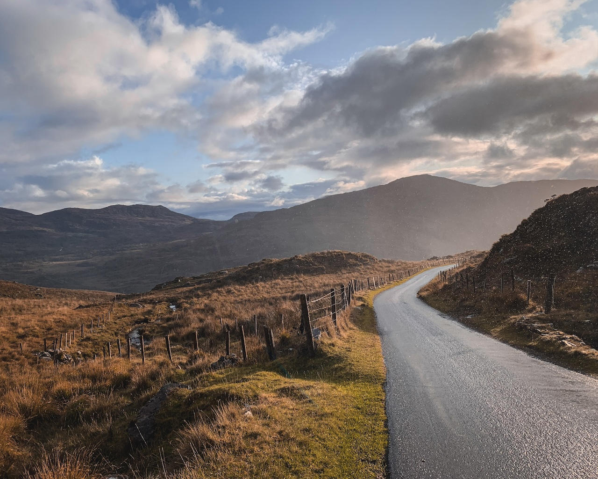
Light breeze in Ireland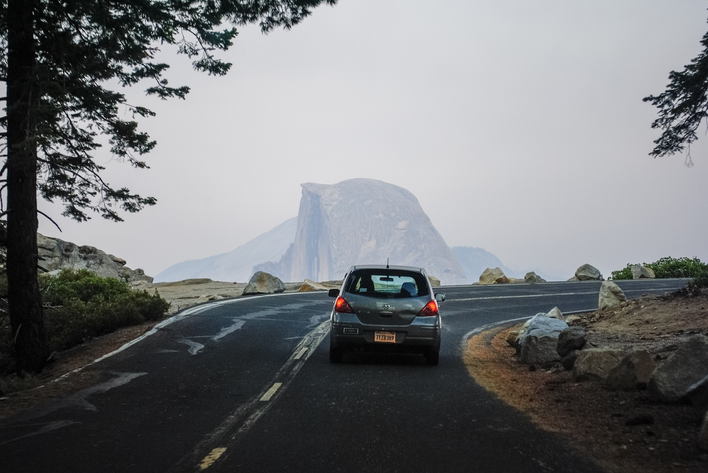
YosemiteSzymon Pifczyk
Experience
Product Marketing Manager
Shaping product positioning and GTM strategy for Meta's Business Messaging platform (Paid Messaging and AI). Owning end-to-end product launches, diagnosing stale growth through deep research, and leading programming at Meta's major events including Conversations (1,000+ enterprise clients) and Performance Marketing Summit (2,000+ clients).
Market Specialist
Built and maintained a voice-of-the-customer programme with insights flowing into Product, Integrity and Policy teams. Proactively identified threats to Meta's image and co-developed integrity policy still used to protect the platform from election interference.
Consultant
Co-created PwC Advisory's first geo-analytics hub. Delivered location strategy and geospatial analysis projects worth $50M+ across Poland, UK, Georgia, Germany, and the US.
Education
MBA
Bachelor of Business Analytics
Graduated with honours. Several publications in scientific journals on spatial econometrics.
Other
Founded and runs Kartografia Ekstremalna, a data blog using GIS analysis to explain complex concepts to broad audiences. Grown to 130,000+ followers across social media and Substack.